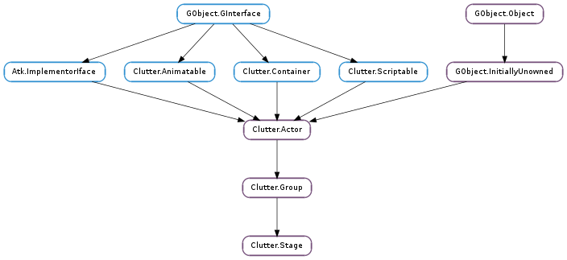

| static | get_default() |
| static | new() |
| ensure_current() | |
| ensure_redraw() | |
| ensure_viewport() | |
| event(event) | |
| get_accept_focus() | |
| get_actor_at_pos(pick_mode, x, y) | |
| get_color() | |
| get_fog() | |
| get_fullscreen() | |
| get_key_focus() | |
| get_minimum_size() | |
| get_motion_events_enabled() | |
| get_no_clear_hint() | |
| get_perspective() | |
| get_redraw_clip_bounds() | |
| get_throttle_motion_events() | |
| get_title() | |
| get_use_alpha() | |
| get_use_fog() | |
| get_user_resizable() | |
| hide_cursor() | |
| is_default() | |
| queue_redraw() | |
| read_pixels(x, y, width, height) | |
| set_accept_focus(accept_focus) | |
| set_color(color) | |
| set_fog(fog) | |
| set_fullscreen(fullscreen) | |
| set_key_focus(actor) | |
| set_minimum_size(width, height) | |
| set_motion_events_enabled(enabled) | |
| set_no_clear_hint(no_clear) | |
| set_perspective(perspective) | |
| set_throttle_motion_events(throttle) | |
| set_title(title) | |
| set_use_alpha(use_alpha) | |
| set_use_fog(fog) | |
| set_user_resizable(resizable) | |
| show_cursor() |
| Name | Type | Flags | Description |
|---|---|---|---|
| accept-focus | bool | r/w | Whether the stage should accept focus on show |
| color | Clutter.Color | r/w | The color of the stage |
| cursor-visible | bool | r/w | Whether the mouse pointer is visible on the main stage |
| fog | Clutter.Fog | r/w | Settings for the depth cueing |
| fullscreen-set | bool | r | Whether the main stage is fullscreen |
| key-focus | Clutter.Actor | r/w | The currently key focused actor |
| no-clear-hint | bool | r/w | Whether the stage should clear its contents |
| offscreen | bool | r/w | Whether the main stage should be rendered offscreen |
| perspective | Clutter.Perspective | r/w | Perspective projection parameters |
| title | str | r/w | Stage Title |
| use-alpha | bool | r/w | Whether to honour the alpha component of the stage color |
| use-fog | bool | r/w | Whether to enable depth cueing |
| user-resizable | bool | r/w | Whether the stage is able to be resized via user interaction |
| Name | Parameters | Return | Description |
|---|---|---|---|
| activate | The ::activate signal is emitted when the stage receives key focus from the underlying window system. | ||
| deactivate | The ::activate signal is emitted when the stage loses key focus from the underlying window system. | ||
| delete-event | Clutter.Event | bool | The ::delete-event signal is emitted when the user closes a Clutter.Stage window using the window controls. Clutter by default will call Clutter.main_quit () if stage is the default stage, and Clutter.Actor.destroy () for any other stage. It is possible to override the default behaviour by connecting a new handler and returning True there. This signal is emitted only on Clutter backends that embed Clutter.Stage in native windows. It is not emitted for backends that use a static frame buffer. |
| fullscreen | The ::fullscreen signal is emitted when the stage is made fullscreen. | ||
| unfullscreen | The ::unfullscreen signal is emitted when the stage leaves a fullscreen state. |
| Name | Type | Access |
|---|---|---|
| parent_instance | Clutter.Group | r |
Bases: Clutter.Group
The Clutter.Stage structure contains only private data and should be accessed using the provided API
| Returns: | the main Clutter.Stage. You should never destroy or unref the returned actor. |
|---|---|
| Return type: | Clutter.Stage |
Retrieves a Clutter.Stage singleton.
This function is not as useful as it sounds, and will most likely by deprecated in the future. Application code should only create a Clutter.Stage instance using Clutter.Stage.new (), and manage the lifetime of the stage manually.
The default stage singleton has a platform-specific behaviour: on platforms without the Clutter.FeatureFlags.STAGE_MULTIPLE feature flag set, the first Clutter.Stage instance will also be set to be the default stage instance, and this function will always return a pointer to it.
On platforms with the Clutter.FeatureFlags.STAGE_MULTIPLE feature flag set, the default stage will be created by the first call to this function, and every following call will return the same pointer to it.
| Returns: | a new stage, or None if the default backend does not support multiple stages. Use Clutter.Actor.destroy () to programmatically close the returned stage. |
|---|---|
| Return type: | Clutter.Actor |
Creates a new, non-default stage. A non-default stage is a new top-level actor which can be used as another container. It works exactly like the default stage, but while Clutter.Stage.get_default () will always return the same instance, you will have to keep a pointer to any Clutter.Stage returned by Clutter.Stage.new ().
The ability to support multiple stages depends on the current backend. Use Clutter.feature_available () and Clutter.FeatureFlags.STAGE_MULTIPLE to check at runtime whether a backend supports multiple stages.
This function essentially makes sure the right GL context is current for the passed stage. It is not intended to be used by applications.
Ensures that stage is redrawn
This function should not be called by applications: it is used when embedding a Clutter.Stage into a toolkit with another windowing system, like GTK+.
Ensures that the GL viewport is updated with the current stage window size.
This function will queue a redraw of stage.
This function should not be called by applications; it is used when embedding a Clutter.Stage into a toolkit with another windowing system, like GTK+.
| Parameters: | event (Clutter.Event) – a Clutter.Event |
|---|---|
| Returns: | the return value from the signal emission |
| Return type: | bool |
This function is used to emit an event on the main stage.
You should rarely need to use this function, except for synthetised events.
| Returns: | True if the Clutter.Stage should accept focus, and False otherwise |
|---|---|
| Return type: | bool |
Retrieves the value set with Clutter.Stage.set_accept_focus ().
| Parameters: |
|
|---|---|
| Returns: | the actor at the specified coordinates, if any |
| Return type: |
Checks the scene at the coordinates x and y and returns a pointer to the Clutter.Actor at those coordinates.
By using pick_mode it is possible to control which actors will be painted and thus available.
| Return type: | color: Clutter.Color |
|---|
Retrieves the stage color.
| Return type: | fog: Clutter.Fog |
|---|
Retrieves the current depth cueing settings from the stage.
| Returns: | True if the stage is full screen |
|---|---|
| Return type: | bool |
Retrieves whether the stage is full screen or not
| Returns: | the actor with key focus, or the stage |
|---|---|
| Return type: | Clutter.Actor |
Retrieves the actor that is currently under key focus.
| Return type: | width: int, height: int |
|---|
Retrieves the minimum size for a stage window as set using Clutter.Stage.set_minimum_size ().
The returned size may not correspond to the actual minimum size and it is specific to the Clutter.Stage implementation inside the Clutter backend
| Returns: | True if the per-actor motion event delivery is enabled and False otherwise |
|---|---|
| Return type: | bool |
Retrieves the value set using Clutter.Stage.set_motion_events_enabled ().
| Returns: | True if the stage should not clear itself on every paint cycle, and False otherwise |
|---|---|
| Return type: | bool |
Retrieves the hint set with Clutter.Stage.set_no_clear_hint ()
| Return type: | perspective: Clutter.Perspective |
|---|
Retrieves the stage perspective.
| Return type: | clip: cairo.RectangleInt |
|---|
Gets the bounds of the current redraw for stage in stage pixel coordinates. E.g., if only a single actor has queued a redraw then Clutter may redraw the stage with a clip so that it doesn’t have to paint every pixel in the stage. This function would then return the bounds of that clip. An application can use this information to avoid some extra work if it knows that some regions of the stage aren’t going to be painted. This should only be called while the stage is being painted. If there is no current redraw clip then this function will set clip to the full extents of the stage.
| Returns: | True if the motion events are being throttled, and False otherwise |
|---|---|
| Return type: | bool |
Retrieves the value set with Clutter.Stage.set_throttle_motion_events ()
| Returns: | pointer to the title string for the stage. The returned string is owned by the actor and should not be modified or freed. |
|---|---|
| Return type: | str |
Gets the stage title.
| Returns: | True if the stage should honour the opacity and the alpha channel of the stage color |
|---|---|
| Return type: | bool |
Retrieves the value set using Clutter.Stage.set_use_alpha ()
| Returns: | True if the depth cueing effect is enabled |
|---|---|
| Return type: | bool |
Gets whether the depth cueing effect is enabled on stage.
| Returns: | True if the stage is resizable by the user. |
|---|---|
| Return type: | bool |
Retrieves the value set with Clutter.Stage.set_user_resizable ().
Makes the cursor invisible on the stage window
| Returns: | True if the passed stage is the default one |
|---|---|
| Return type: | bool |
Checks if stage is the default stage, or an instance created using Clutter.Stage.new () but internally using the same implementation.
Queues a redraw for the passed stage.
Applications should call Clutter.Actor.queue_redraw () and not this function.
| Parameters: |
|
|---|---|
| Returns: | a pointer to newly allocated memory with the buffer or None if the read failed. Use GLib.free () on the returned data to release the resources it has allocated. |
| Return type: | [int] |
Makes a screenshot of the stage in RGBA 8bit data, returns a linear buffer with width * 4 as rowstride.
The alpha data contained in the returned buffer is driver-dependent, and not guaranteed to hold any sensible value.
| Parameters: | accept_focus (bool) – True to accept focus on show |
|---|
Sets whether the stage should accept the key focus when shown.
This function should be called before showing stage using Clutter.Actor.show ().
| Parameters: | color (Clutter.Color) – A Clutter.Color |
|---|
Sets the stage color.
| Parameters: | fog (Clutter.Fog) – a Clutter.Fog structure |
|---|
Sets the fog (also known as “depth cueing”) settings for the stage.
A Clutter.Stage will only use a linear fog progression, which depends solely on the distance from the viewer. The Cogl.set_fog () function in COGL exposes more of the underlying implementation, and allows changing the for progression function. It can be directly used by disabling the Clutter.Stage :use-fog property and connecting a signal handler to the Clutter.Actor ::paint signal on the stage, like:
clutter_stage_set_use_fog (stage, FALSE);
g_signal_connect (stage, "paint", G_CALLBACK (on_stage_paint), NULL);
The paint signal handler will call Cogl.set_fog () with the desired settings:
static void
on_stage_paint (ClutterActor *actor)
{
ClutterColor stage_color = { 0, };
CoglColor fog_color = { 0, };
/* set the fog color to the stage background color */
clutter_stage_get_color (CLUTTER_STAGE (actor), &stage_color);
cogl_color_init_from_4ub (&fog_color,
stage_color.red,
stage_color.green,
stage_color.blue,
stage_color.alpha);
/* enable fog */
cogl_set_fog (&fog_color,
COGL_FOG_MODE_EXPONENTIAL, /* mode */
0.5, /* density */
5.0, 30.0); /* z_near and z_far */
}
The fogging functions only work correctly when the visible actors use unmultiplied alpha colors. By default Cogl will premultiply textures and Cogl.set_source_color () will premultiply colors, so unless you explicitly load your textures requesting an unmultiplied internal format and use Cogl.Material.set_color () you can only use fogging with fully opaque actors. Support for premultiplied colors will improve in the future when we can depend on fragment shaders.
| Parameters: | fullscreen (bool) – True to to set the stage fullscreen |
|---|
Asks to place the stage window in the fullscreen or unfullscreen states.
( Note that you shouldn’t assume the window is definitely full screen afterward, because other entities (e.g. the user or window manager) could unfullscreen it again, and not all window managers honor requests to fullscreen windows.
If you want to receive notification of the fullscreen state you should either use the Clutter.Stage ::fullscreen and Clutter.Stage ::unfullscreen signals, or use the notify signal for the Clutter.Stage :fullscreen-set property
| Parameters: | actor (Clutter.Actor or None) – the actor to set key focus to, or None |
|---|
Sets the key focus on actor. An actor with key focus will receive all the key events. If actor is None, the stage will receive focus.
| Parameters: |
|---|
Sets the minimum size for a stage window, if the default backend uses Clutter.Stage inside a window
This is a convenience function, and it is equivalent to setting the Clutter.Actor :min-width and Clutter.Actor :min-height on stage
If the current size of stage is smaller than the minimum size, the stage will be resized to the new width and height
This function has no effect if stage is fullscreen
| Parameters: | enabled (bool) – True to enable the motion events delivery, and False otherwise |
|---|
Sets whether per-actor motion events (and relative crossing events) should be disabled or not.
The default is True.
If enable is False the following events will not be delivered to the actors children of stage.
The events will still be delivered to the Clutter.Stage.
The main side effect of this function is that disabling the motion events will disable picking to detect the Clutter.Actor underneath the pointer for each motion event. This is useful, for instance, when dragging a Clutter.Actor across the stage: the actor underneath the pointer is not going to change, so it’s meaningless to perform a pick.
| Parameters: | no_clear (bool) – True if the stage should not clear itself on every repaint cycle |
|---|
Sets whether the stage should clear itself at the beginning of each paint cycle or not.
Clearing the Clutter.Stage can be a costly operation, especially if the stage is always covered - for instance, in a full-screen video player or in a game with a background texture.
This setting is a hint; Clutter might discard this hint depending on its internal state. If parts of the stage are visible and you disable clearing you might end up with visual artifacts while painting the contents of the stage.
| Parameters: | perspective (Clutter.Perspective) – A Clutter.Perspective |
|---|
Sets the stage perspective. Using this function is not recommended because it will disable Clutter’s attempts to generate an appropriate perspective based on the size of the stage.
| Parameters: | throttle (bool) – True to throttle motion events |
|---|
Sets whether motion events received between redraws should be throttled or not. If motion events are throttled, those events received by the windowing system between redraws will be compressed so that only the last event will be propagated to the stage and its actors.
This function should only be used if you want to have all the motion events delivered to your application code.
| Parameters: | title (str) – A utf8 string for the stage windows title. |
|---|
Sets the stage title.
| Parameters: | use_alpha (bool) – whether the stage should honour the opacity or the alpha channel of the stage color |
|---|
Sets whether the stage should honour the Clutter.Actor :opacity and the alpha channel of the Clutter.Stage :color
| Parameters: | fog (bool) – True for enabling the depth cueing effect |
|---|
Sets whether the depth cueing effect on the stage should be enabled or not.
Depth cueing is a 3D effect that makes actors farther away from the viewing point less opaque, by fading them with the stage color.
The parameters of the GL fog used can be changed using the Clutter.Stage.set_fog () function.
| Parameters: | resizable (bool) – whether the stage should be user resizable. |
|---|
Sets if the stage is resizable by user interaction (e.g. via window manager controls)
Shows the cursor on the stage window